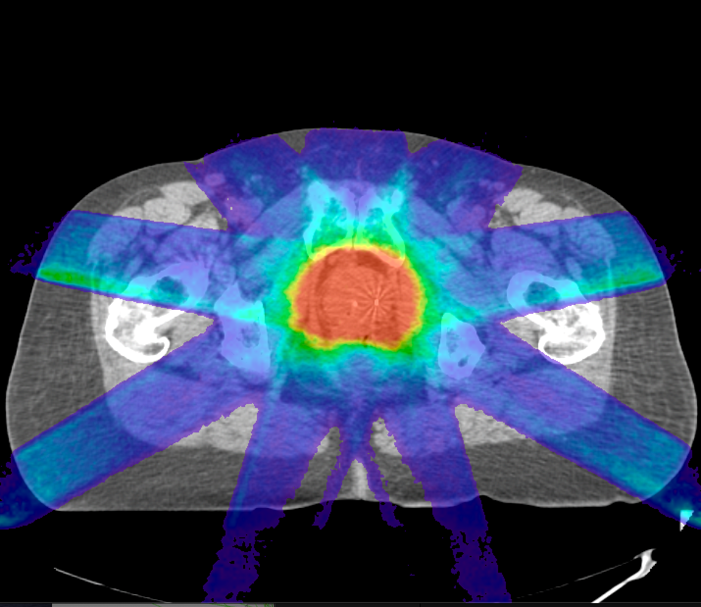
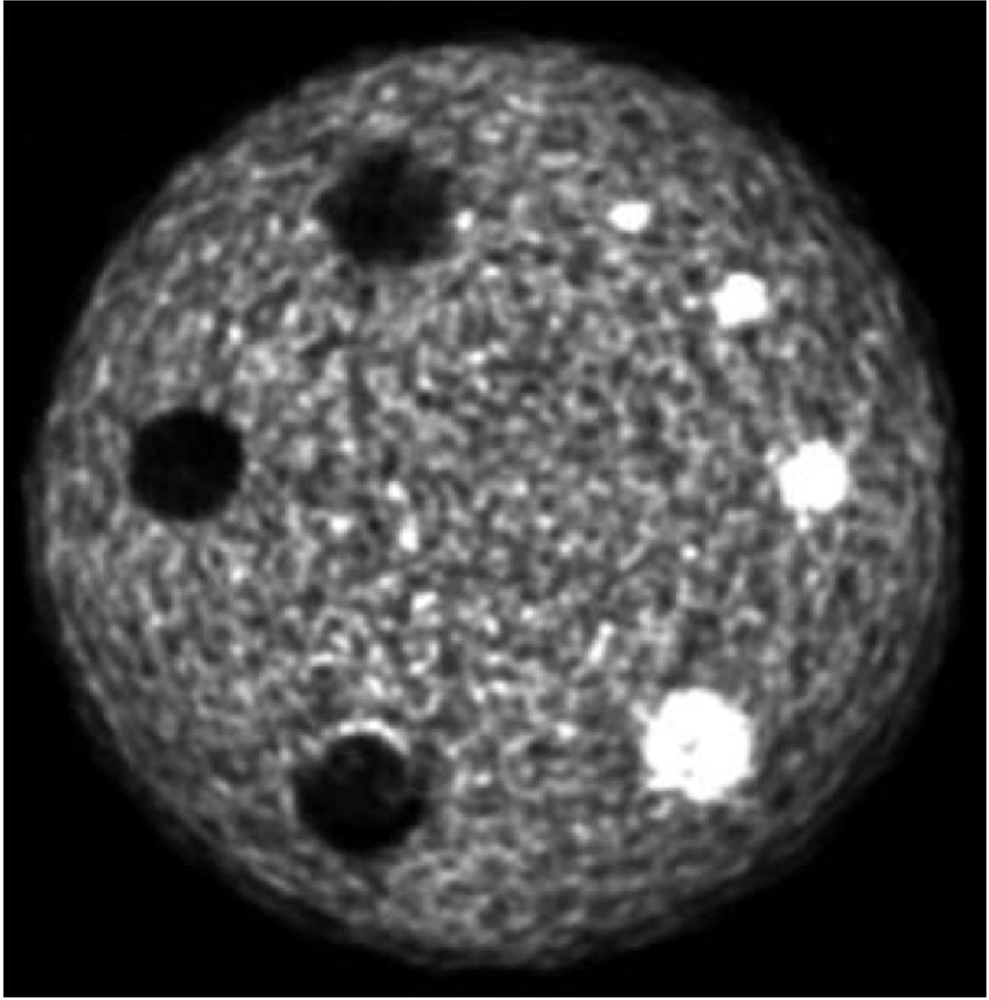
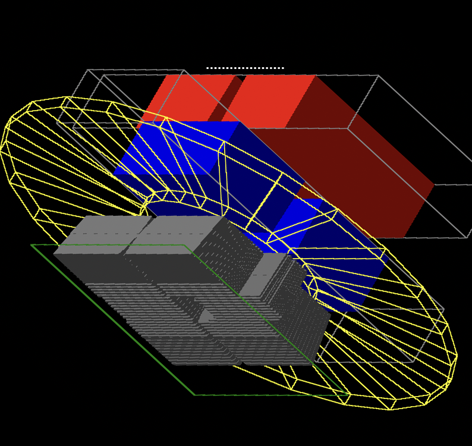
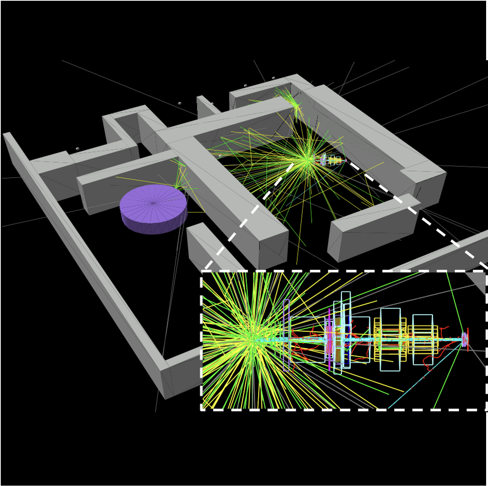
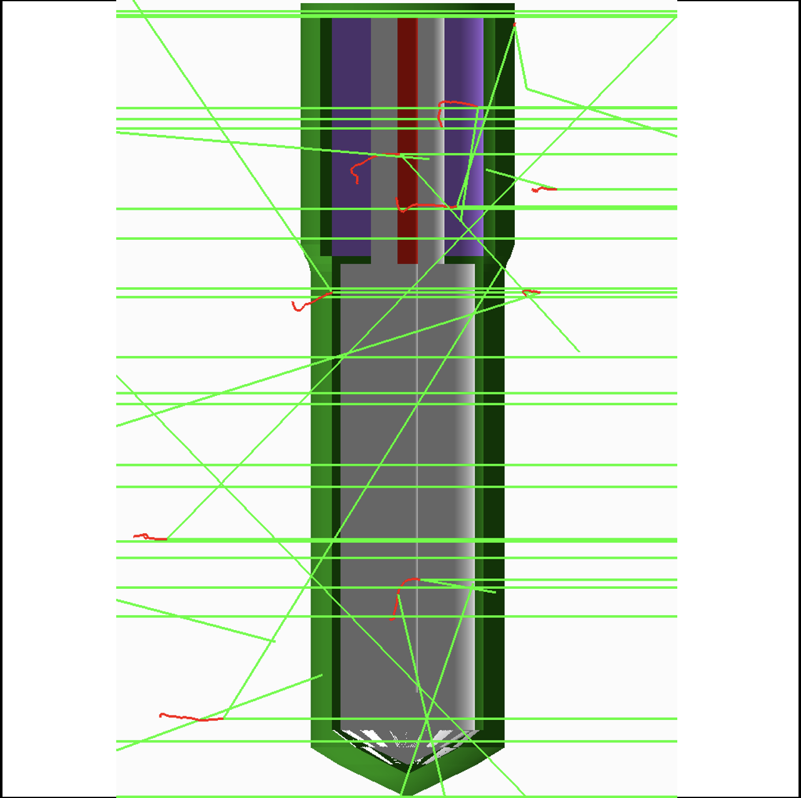
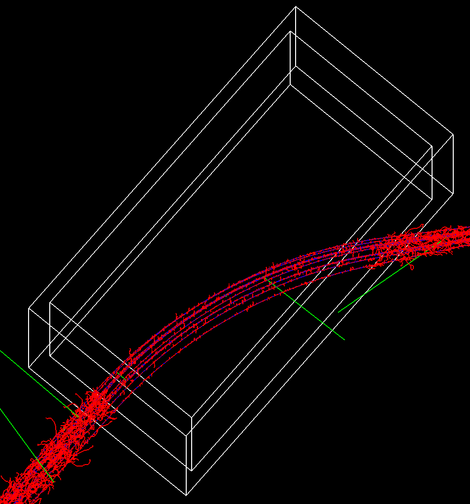
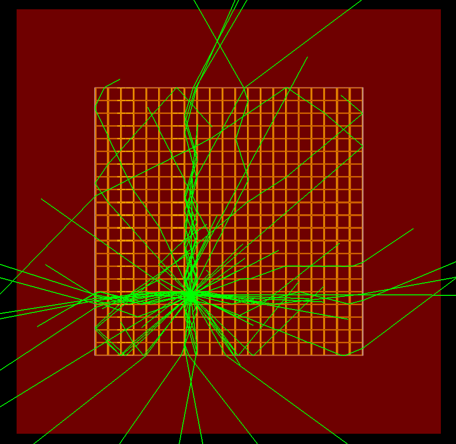

Official site of
The TOPAS Collaboration
A Monte Carlo Simulation Tool
for Physics, Biology and Clinical Research.







Publications
Cite these peer-reviewed articles when referencing OpenTOPAS in your own publications.
- B. Faddegon, J. Ramos-Méndez, J. Schümann, A. McNamara, J. Shin, J. Perl, H. Paganetti. “The TOPAS Tool for Particle Simulation, a Monte Carlo Simulation Tool for Physics, Biology and Clinical Research.” Phys Med. 2020 Apr 02;72:114-121. PMID: 32247964. PMCID: PMC7192305.
- J. Perl, J. Shin, J. Schümann, B. Faddegon, H. Paganetti. “TOPAS: an innovative proton Monte Carlo platform for research and clinical applications.” Med Phys. 2012 Nov;39(11):6818-37.